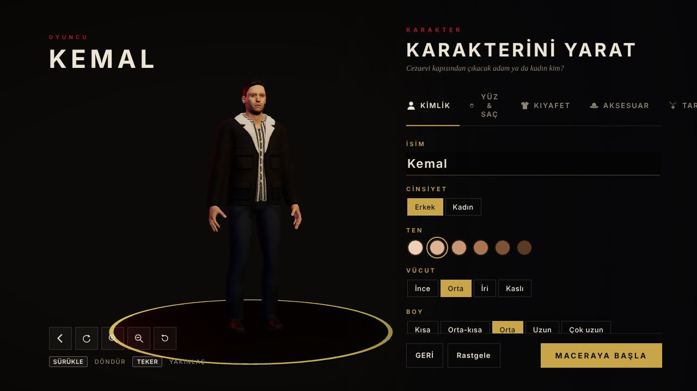
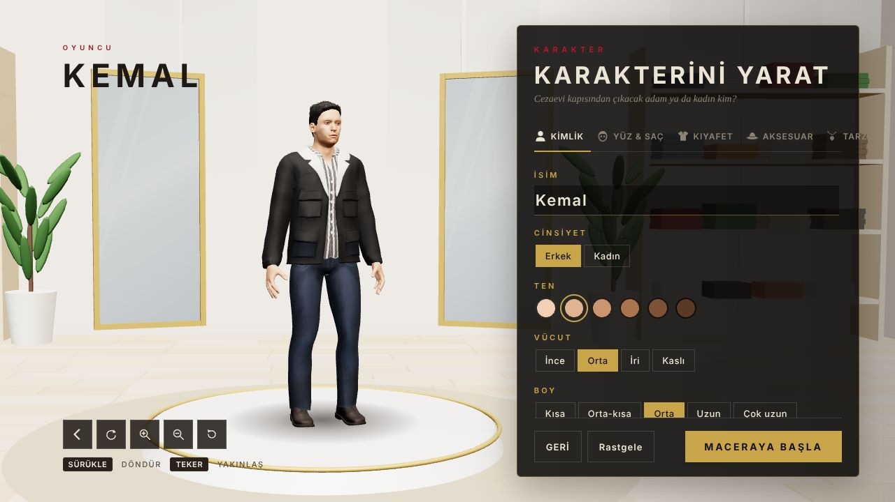
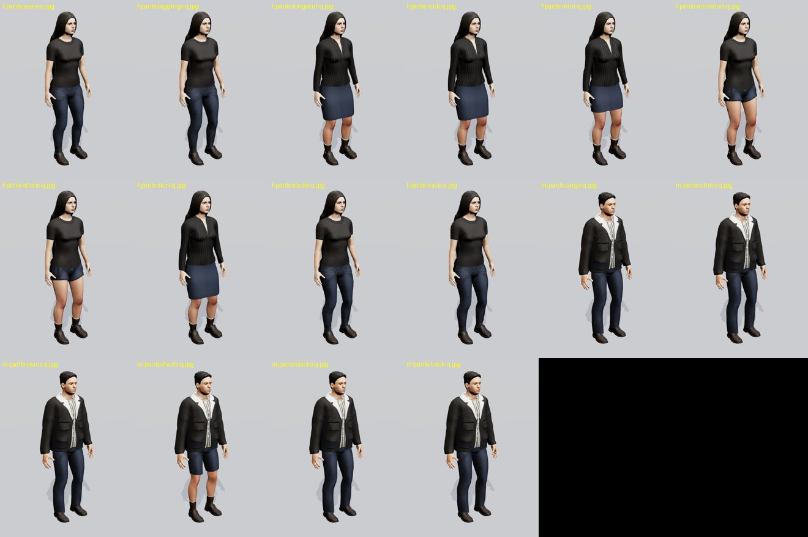
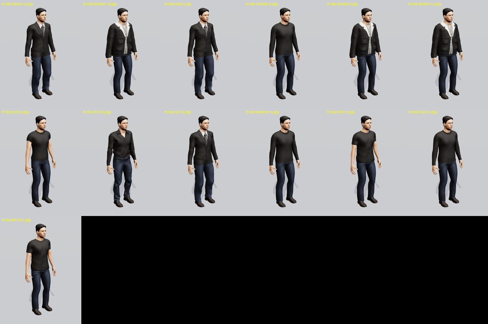
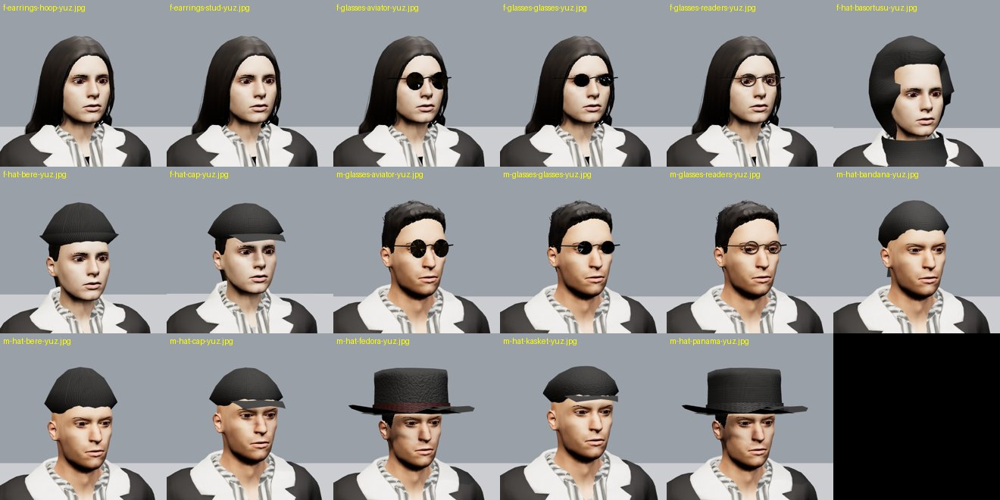
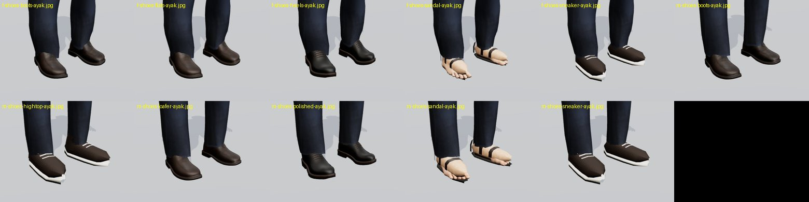
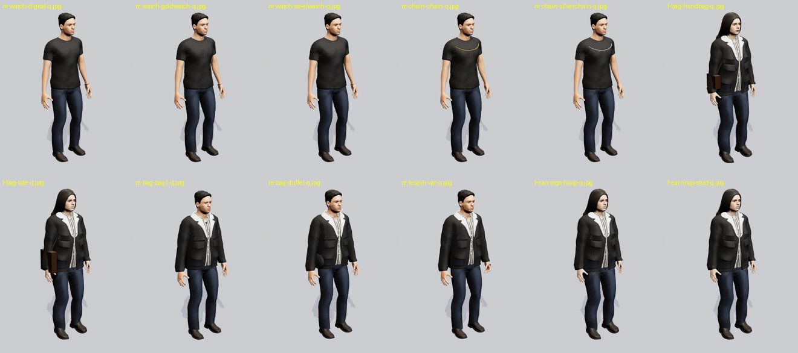

Üretim: node scripts/atolye.js --on giysi: --gorunus q (baş için yuz, ayakkabı için ayak). Tek tek görüntüler .testout/atolye/giysi_*.jpg.


Erkek şort artık görünüyor (kıyafetin pantolonu diz üstünde kesilir); mini etek kısaldı. Erkek pantolon türleri aynı ağdır (renk ayırır); midi/uzun etek için CC0 ağ yok.


Gözlük gerçek göz hizasına taşındı; şapkalar saçı saracak kadar büyütülüp alına indirildi; kasketin tepesi artık var.

Spor ayakkabı, basket botu ve sandalet kodla üretilen ayakkabıdan taşınır (MakeHuman'ın altı ayakkabısı da klasik görünüyordu).

Saat, zincir, çanta, tespih, yüzük eskiden gerçekçi gövdede hiç çizilmiyordu.
